Generate a graph showing the contents of a list.
Usage
paint_list(
data,
summarise = FALSE,
show_indices = "none",
highlight_area = NULL,
highlight_color = "lemonchiffon",
graph_title = paste0("Data Object: ", deparse(substitute(data))),
graph_subtitle = NULL,
sigfig = 3L,
subtle_digits = c("insignificant", "rounded", "none"),
max_chars = 12L,
max_rows = 10L,
max_cols = 8L,
show_all = FALSE,
fontsize = NULL,
family = "mono",
palette = NULL,
show_types = TRUE,
show_names = TRUE,
name_align = c("center", "left", "right"),
type_align = c("center", "left", "right"),
gap = 0,
highlight_rows = NULL,
highlight_columns = NULL,
highlight_locations = NULL
)
gpaint_list(
data,
summarise = FALSE,
show_indices = "none",
highlight_area = NULL,
highlight_color = "lemonchiffon",
graph_title = paste0("Data Object: ", deparse(substitute(data))),
graph_subtitle = NULL,
sigfig = 3L,
subtle_digits = c("insignificant", "rounded", "none"),
max_chars = 12L,
max_rows = 10L,
max_cols = 8L,
show_all = FALSE,
fontsize = NULL,
family = "mono",
palette = NULL,
show_types = TRUE,
show_names = TRUE,
name_align = c("center", "left", "right"),
type_align = c("center", "left", "right"),
gap = 0,
highlight_rows = NULL,
highlight_columns = NULL,
highlight_locations = NULL
)Arguments
- data
A bare
list. A list carrying a class –as.POSIXlt(Sys.time()), anlm, at.test()result – is refused:is.list()is TRUE for all of them, but a datetime drawn as eleven ragged columns ofsec,min,hour, ... is a wrong picture, not a picture of a list.- summarise
Draw every element as ONE cell saying what it is (
<int [3]>,<chr [1]>) instead of one cell per value. Default:FALSE. It is the structure of the list at a glance, and it is what a 40-element list wants.- show_indices
Draw
[[j]][i]under each value ("cell"or"all"), or nothing ("none", the default).l[[2]][3]is the expression students get wrong most often –l[2]is a list,l[[2]]is the vector,l[[2]][3]is the value – and this lane prints it under the number it returns. A summarised element gets[[j]], because that is the accessor that returns the element itself.There is deliberately no
[i]gutter down the left. In a data frame, reading across a row is the whole point:df[[1]][2]anddf[[2]][2]are one record. In a list that is false, and a lane that teaches it would be a lane that teaches a falsehood. Elision sharpens the point: because it is asked of each element separately, a drawn row of a long list can holda[9]besidec[7]– so a gutter could not even name the positions it sat beside, let alone claim they were a record.- highlight_area
Logical matrix marking the cells to fill: POSITIONS by ELEMENTS, as deep as the deepest element. Build it with
highlight_columns()(which selects elements, by name as well as by number) andhighlight_rows()(which selects positions within them). A length-one logical is recycled. Default:NULL, which highlights nothing.- highlight_color
Color to use to fill the background of a cell.
- graph_title
Title to appear in the upper left hand corner of the graph.
- graph_subtitle
Subtitle to appear immediately under the graph title.
NULL(the default) describes the data: how many elements, the range of their lengths, and the class.NAor""draws no subtitle.- sigfig
Significant digits drawn in black. Digits past the
sigfig-th are drawn in grey; nothing is discarded. Must be in1:15.- subtle_digits
Which digits are drawn grey.
"insignificant"(the default) greys everything past thesigfig-th significant digit;"rounded"greys only digits the rendering actually lost;"none"draws everything black.- max_chars
Strings longer than this are truncated with an ellipsis.
- max_rows
Elide the middle of an element longer than this. Default:
10. It is asked of each element SEPARATELY, so a length-2 element beside a length-40 one draws no"..."– it is hiding nothing.- max_cols
Elide the middle of the list when it has more elements than this. Default:
8, because a list's columns are as wide as a name.- show_all
Draw every cell, however small the text becomes. Warns when the text falls below the legibility floor.
- fontsize
Font size in points.
NULL(the default) fits the text to the device.- family
Font family.
"mono"by default.- palette
Colour palette for the drawing. One of
"mint"(the default),"slate","warm", or"classic"(the original look). Defaults to the"paintr.palette"option when unset. A named list of colours is also accepted.- show_types
Draw the type-tag row (
<dbl>,<chr>, ...) under the element names. Default:TRUE.- show_names
Draw the element-name row. Default:
TRUE. A named element is labelled$a; an unnamed one is labelled[[2]], exactly asprint()does it. (This per-element fallback is the one place in the package where a label lane holds two kinds of thing at once – a list is the only structure whose parts are named one at a time.)- name_align
How the element names sit over their column:
"center"(the default),"left"or"right".- type_align
How the type tags sit over their column. Independent of
name_align. Neither moves the values, which keep their own alignment.- gap
Empty space to insert BETWEEN adjacent element columns, in units of one column width. Default:
0, which draws the columns tight – so a rectangular list stays pixel-identical to the equivalent data frame.gap = 0.5inserts half a column of background between each pair of elements,gap = 1a full column, to emphasise that a list is a BAG OF INDEPENDENT VECTORS and not a 2-D grid. The space is empty background, never a cell; it goes only between columns, not before the first, after the last, or down the index gutter. A spaced list draws no block outline, because a single border across the gaps would imply the rectangle the gap is there to break; see the outline section.- highlight_rows, highlight_columns, highlight_locations
Shorthand for
highlight_area, built for you withhighlight_data():highlight_columnsselects ELEMENTS (by name or number),highlight_rowsselects POSITIONS within them, andhighlight_locationsreaches individual cells. Sohighlight_columns = "c"is exactlyhighlight_area = highlight_columns(data, "c"). Give several at once to fill their union. Supplyinghighlight_areatogether with any of these is an error. Default:NULL.
Value
paint_list() invisibly returns the resolved cell table. See paint_matrix()
for its components.
gpaint_list() returns a ggplot object.
Details
This picture does not draw NESTING. A sublist is drawn as a single grey token
saying what it is – <list [2]> – and its contents are not drawn at all.
Nesting is the hard part of lists (l$a$b, "why is my result a list of lists"),
and this painter refuses to teach it rather than teach it badly: a geometric
sub-grid inside a cell would not extend the layout engine, it would delete it
(every column has ONE width, indexed by integer column, and a fractional row is
silently truncated). The refusal is deliberate and it is stated here rather than
discovered in a picture. The same is true of any element that is not a plain
one-dimensional vector: a matrix element draws as <int [2 x 2]>, a data frame
element as <df [5 x 3]>.
paint_list() draws on the current base graphics device. gpaint_list() returns
a ggplot object.
A data frame IS a list whose elements happen to share a length. That is what
this picture is for. Draw paint_data_frame(data.frame(a = 1:3, b = 4:6)) and
paint_list(list(a = 1:3, b = 4:6)) side by side and they are the same picture,
down to the heavy border around the block and every cell inside it – only the
header ($a, not a) and the subtitle say which is which. Then draw
paint_list(list(a = 1:3, b = 4)) and watch the rectangle break. The shared
length is the only thing a data frame adds, and these two pictures are the proof.
Each element is its own formatting unit, exactly as a data frame's column is: a
1e15 in one element will not flip another into scientific notation.
The outline is the lesson
Every painter draws a heavy border around the block of values when that block is
a rectangle – and a list's block is a rectangle exactly when its elements share
a length, which is exactly when the list could have been a data frame. So the
border is not decoration on this picture; it is the fact being taught. Give the
elements a shared length and the rectangle closes, around the very same cells the
equivalent paint_data_frame() closes it around; take the shared length away and
the rectangle breaks.
A ragged list therefore draws no outline, and that is a decision rather than an omission. The heavy border would be the BOUNDING BOX of the drawn cells, so on a 4/1/3 list it would run down to the bottom of the deepest element and the length-1 element would sit at the top of a tall, empty, heavily-boxed column – a box drawn around cells that do not exist. The cells keep their own borders, so the block still reads as a block; it just reads as the ragged block it actually is.
summarise = TRUE draws every element as one cell, so the block is one row deep
and rectangular whatever the elements' lengths are, and it is outlined.
The ggplot object is a shell
gpaint_list() returns a real ggplot object – + theme(), ggsave(),
print() and knitr chunks all work – but its panel is drawn entirely by a
custom grid grob, held in a single annotation_custom() over a meaningless
0..1 coordinate system. There is no aes(), no geom and no scale carrying any
meaning, so ggplot_build() sees an empty layer and + scale_fill_*() has no
effect on the drawing. Use highlight_area and highlight_color to fill cells.
See also
Other painters:
paint_array(),
paint_data_frame(),
paint_matrix(),
paint_size(),
paint_vector()
Examples
# Base graphics
# A list is a bag of vectors, and they need not be the same length.
paint_list(list(a = 1:4, b = "x", c = c(TRUE, FALSE, NA)))
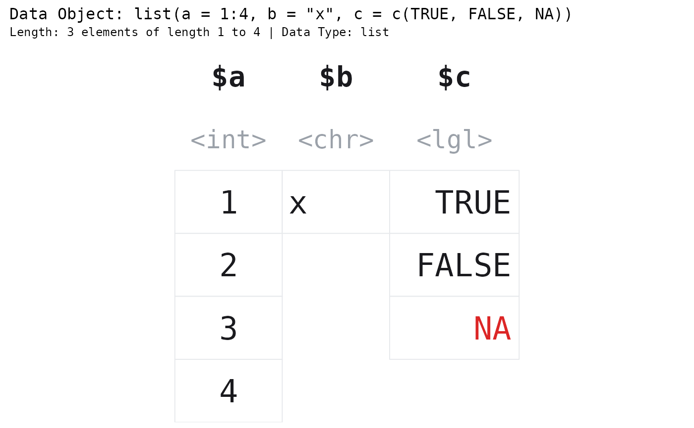
# A data frame IS a list whose elements happen to share a length. These two
# pictures are the same picture.
paint_list(list(a = 1:3, b = 4:6))
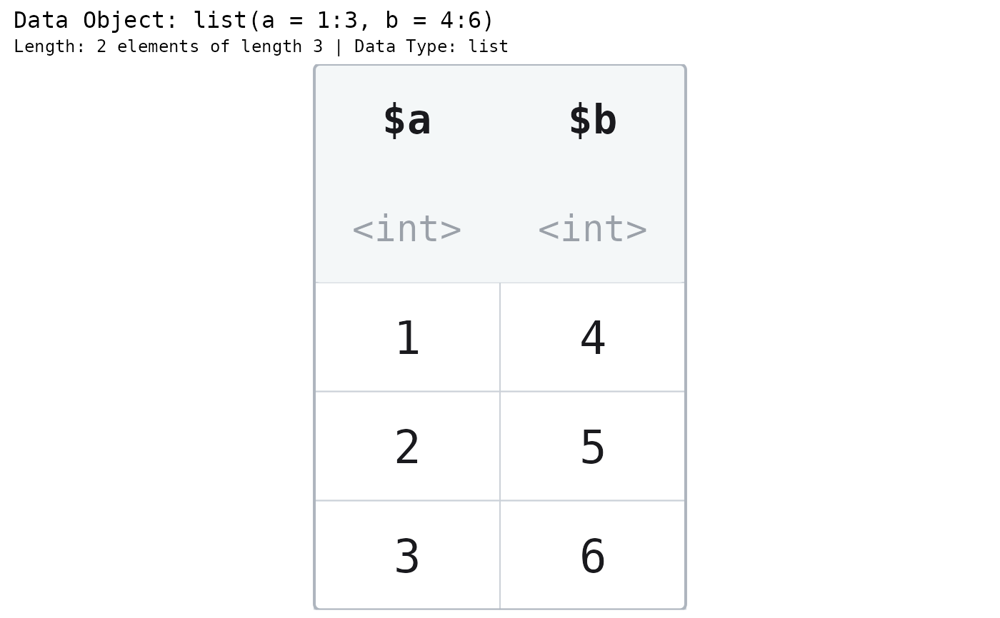
paint_data_frame(data.frame(a = 1:3, b = 4:6))
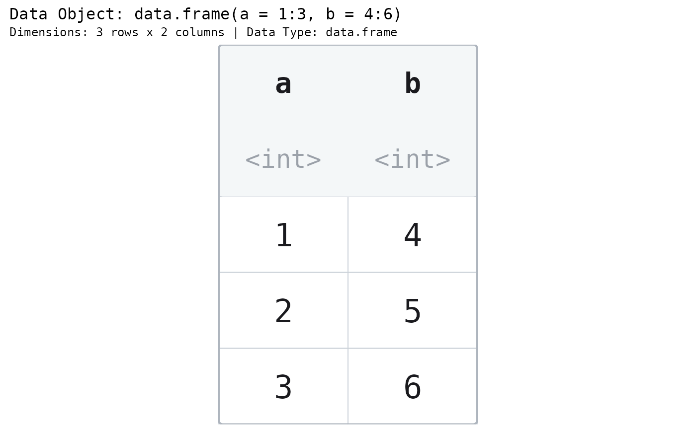
# An unnamed element is labelled the way print() labels it.
paint_list(list(1:3, b = letters[1:2]))
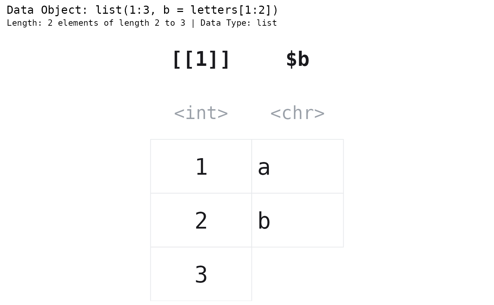
# The accessor students get wrong, printed under the value it returns.
paint_list(list(a = 1:4, b = c(2.5, 3.5)), show_indices = "cell")
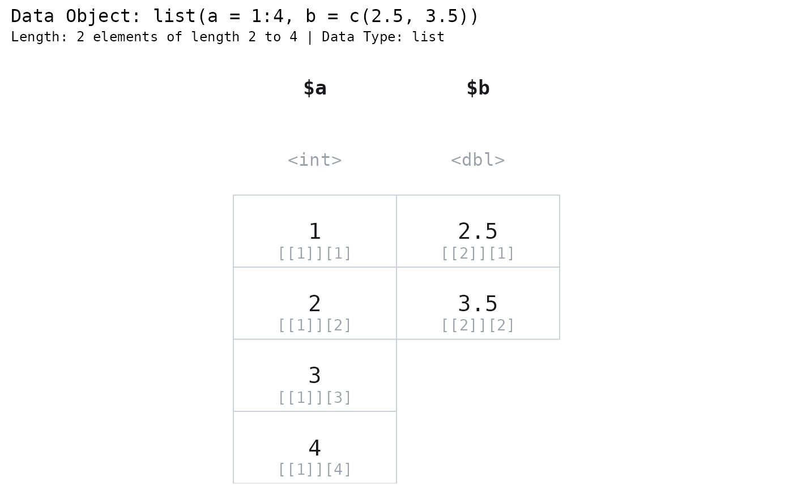
# A sublist is NOT drawn. It says what it is and stops there.
paint_list(list(a = 1:3, b = list(1, 2)))
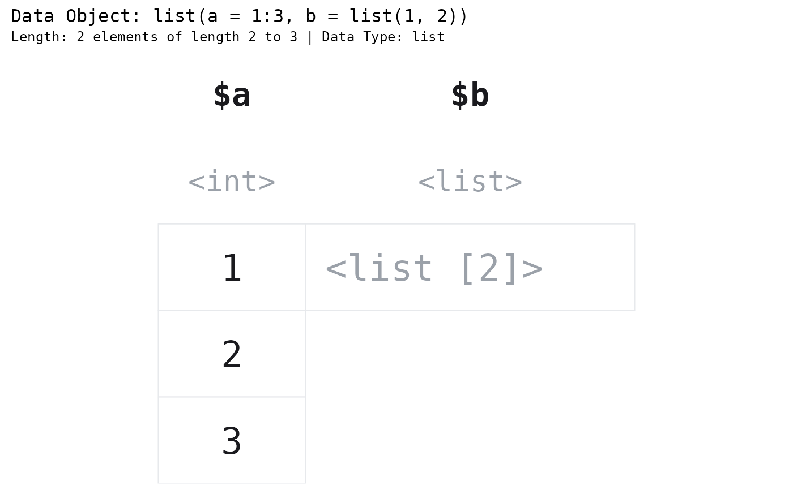
# The structure of a long list, at a glance.
paint_list(list(a = 1:40, b = letters, c = matrix(1:4, 2)), summarise = TRUE)
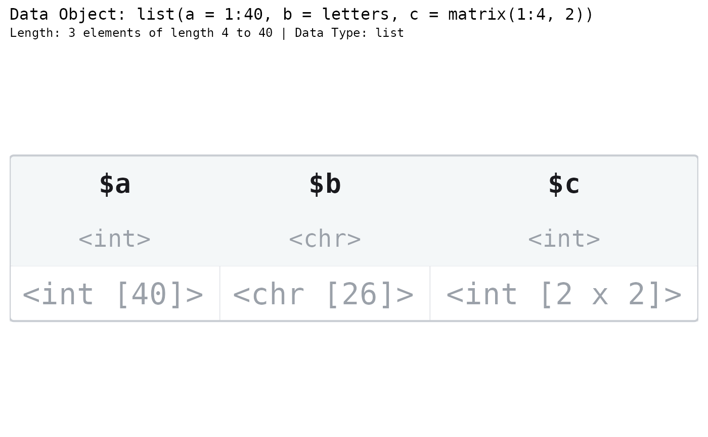
# Highlight an element by name.
l <- list(a = 1:4, b = "x", c = c(TRUE, FALSE, NA))
paint_list(l, highlight_area = highlight_columns(l, "c"))
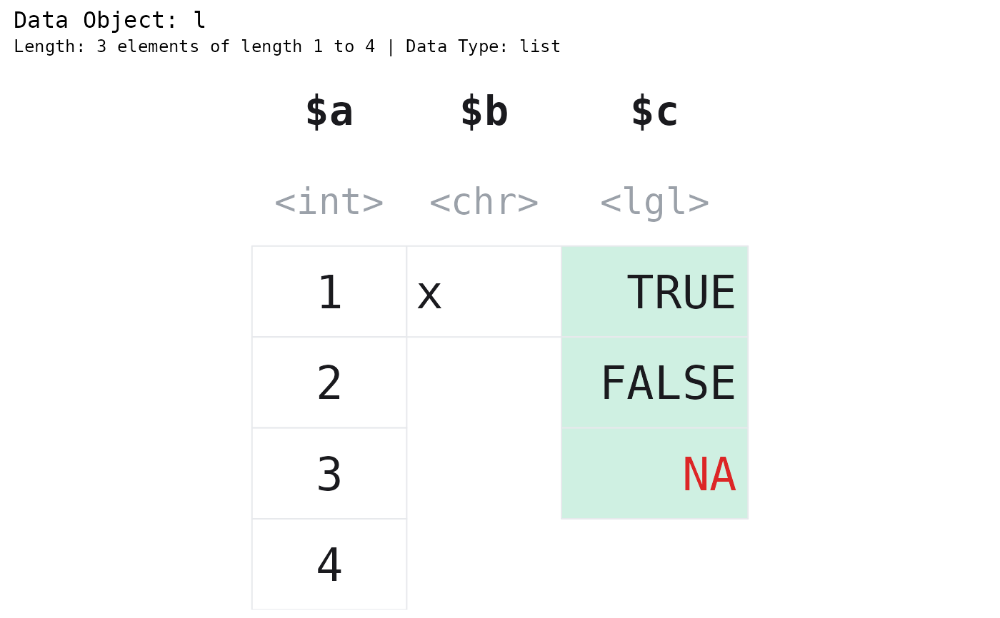
# Space the columns apart to stress that a list is a bag of independent
# vectors, not a grid. A spaced list draws no block outline.
paint_list(list(a = 1:3, b = c("x", "y", "z"), c = c(TRUE, FALSE, NA)), gap = 0.5)
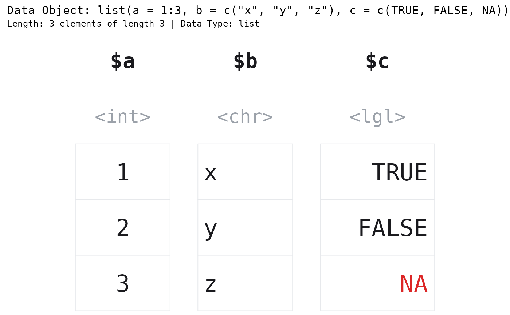
# ggplot2 graphics ----
gpaint_list(list(a = 1:4, b = "x", c = c(TRUE, FALSE, NA)))
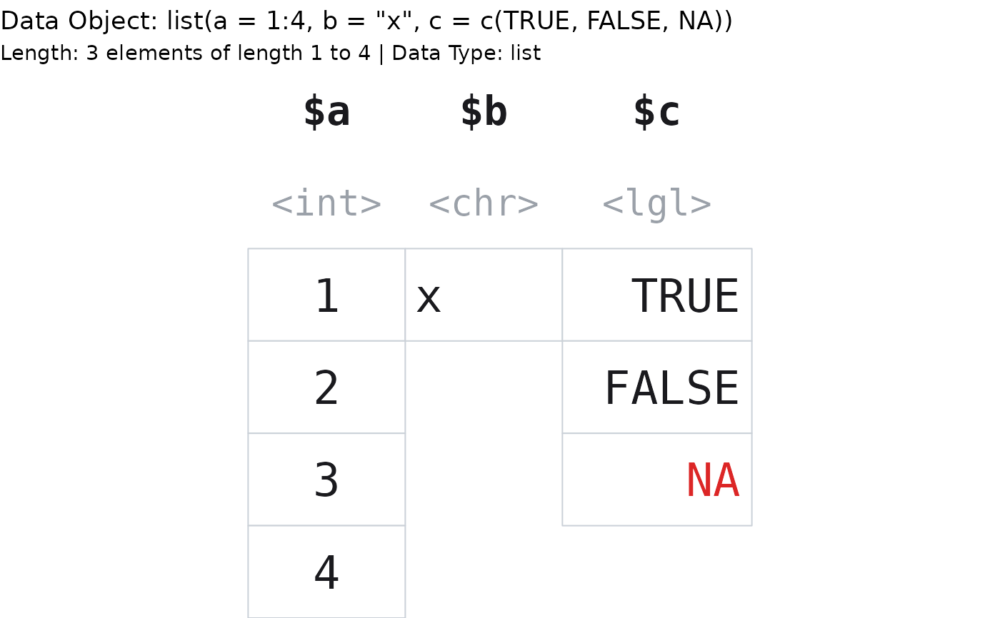
gpaint_list(list(a = 1:40, b = letters), summarise = TRUE)
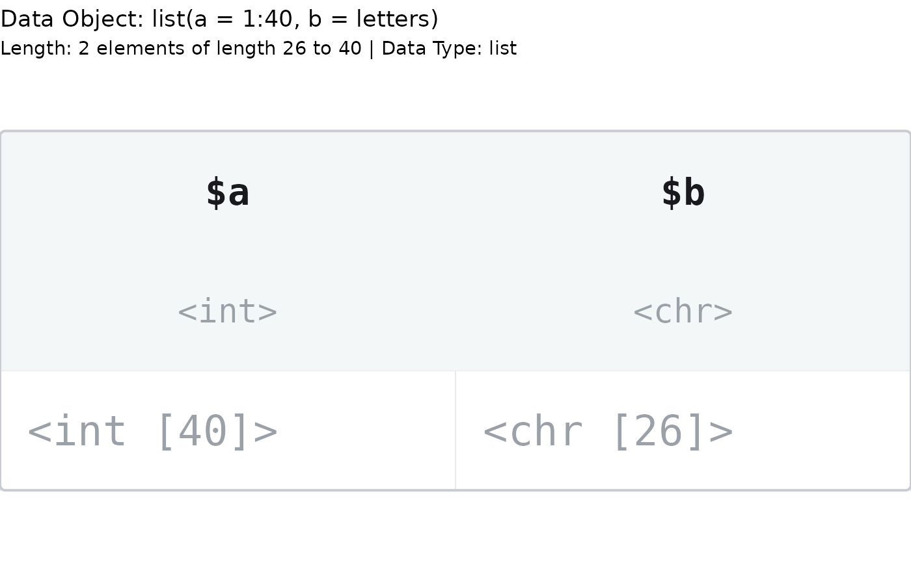